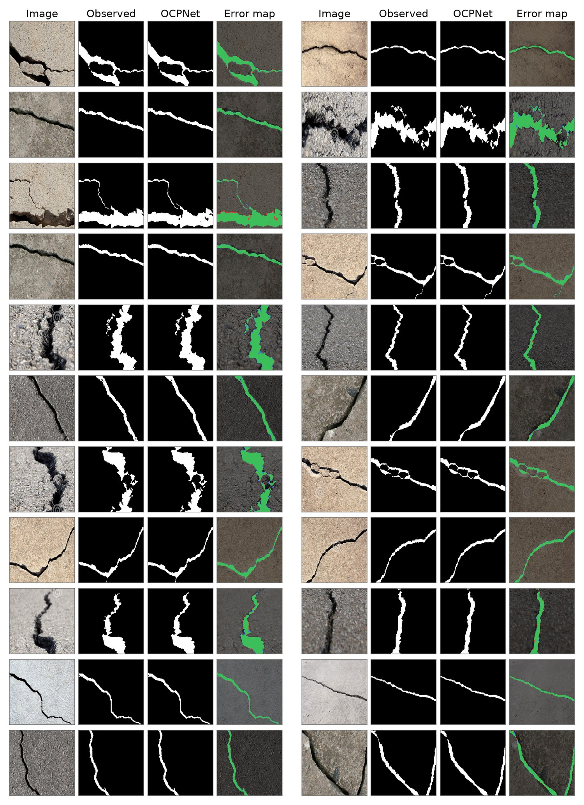
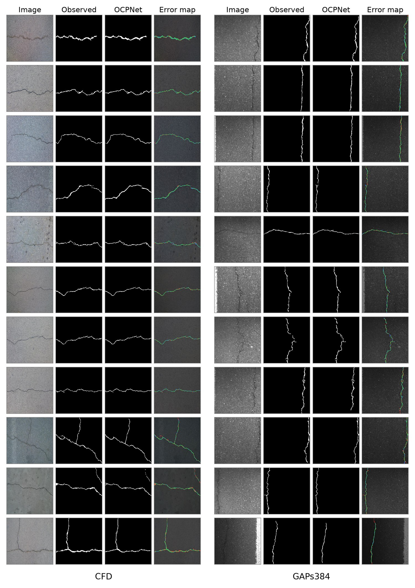

Explore the predictions
Drag the divider to wipe between the input image and the selected frame, or cycle the frames automatically.
◂▸
agreement
missed crack
additional prediction

DeepCrack. The masks follow the annotated centerline over the full length of each crack, junctions included.

CFD on the left and GAPs384 on the right.